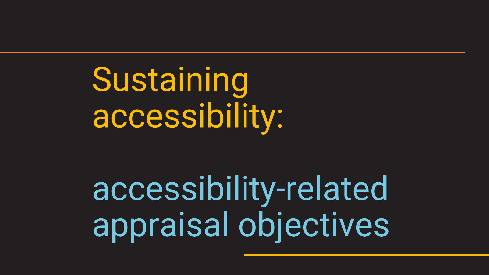
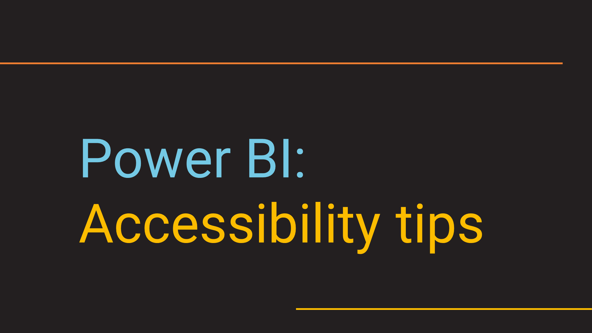
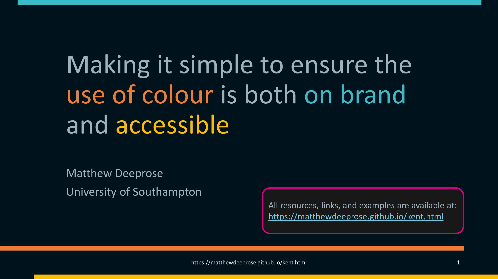
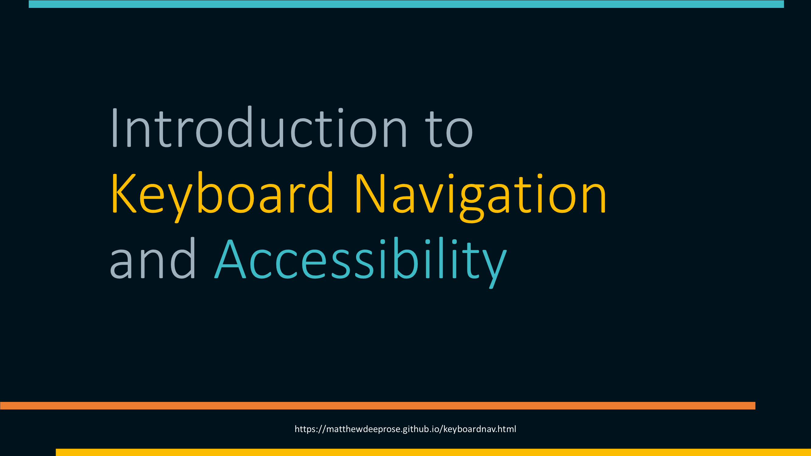
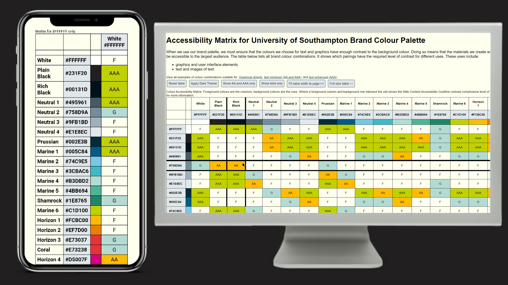

Welcome
How can we deliver digital services that meet accessibility guidelines? In the UK, Universities understand their responsibilities, and are attempting to untangle accessibility requirements into practical and actionable approaches.
On this site you can find recent presentations, posts, and projects on these topics in one place.
Recent presentations
-
Alt text for images, charts, and graphs
How do we write alternative text for complex images like graphs, flow charts, and venn diagrams?
-
Accessibility: Appraisal Objectives
Sustaining accessibility efforts through accessibility-related appraisal objectives
-
Mark-up's impact on accessibility...

Sharing practical examples of ARIA, Semantic HTML, dark/light themes, and much more.
-
Power BI: Accessibility Tips
How do we apply WCAG principles to Power BI reports?
-
Making IT accessible for all!
How can University IT departments embed accessibility within their policies and processes?
-
On brand and accessible?
How can we make accessible colour choices whilst being on brand?
-
Keyboard Navigation and Accessibilty
Accessibility principles and why keyboard navigation is important.
Highlighted projects and resources
-
Brand Palette Colour Contrast Matrix
A colour contrast matrix for brand palettes. Request one for your brand.
-
Accessibility Newsletters and Blogs
A collated list of newsletters and blogs about digital accessibility.